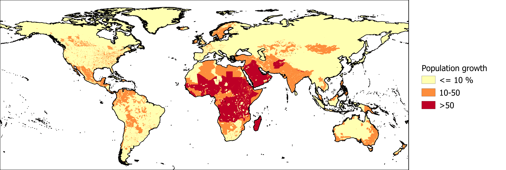

Awareness of changes in groundwater demand in the future is needed to assess the sustainability of groundwater use. This is especially important in areas where groundwater resources are already under pressure. The population growth indicator is derived from the Shared Socioeconomic Pathways (SSP) Database. We use the relative increase in population expected between 2020 and 2050 under the SSP2 ‘middle of the road’ scenario assuming medium economic and population growth.

The population growth expected between 2020 and 2050 based on the SSP2 scenario, divided into risk low (yellow), medium, and high (red) risk categories.
Reference:
Jones, B., & O’Neill, B. C. (2017). Global Population Grids Based on Shared Socioeconomic Pathways (SSPs), 2010-2100. Palisades, NY: NASA Socioeconomic Data and Applications Center (SEDAC). doi:10.7927/H4RF5S0P